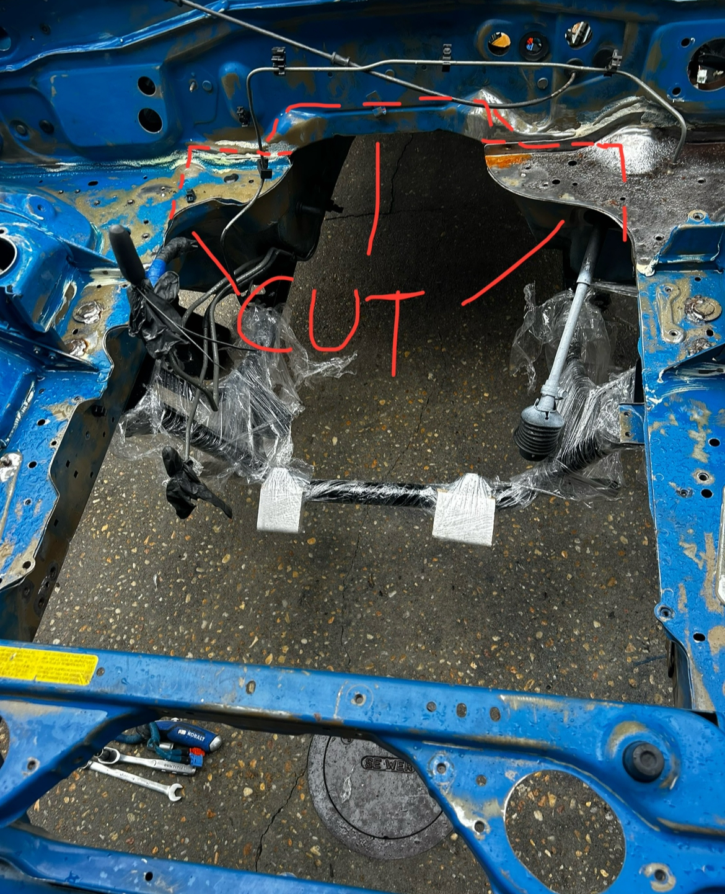
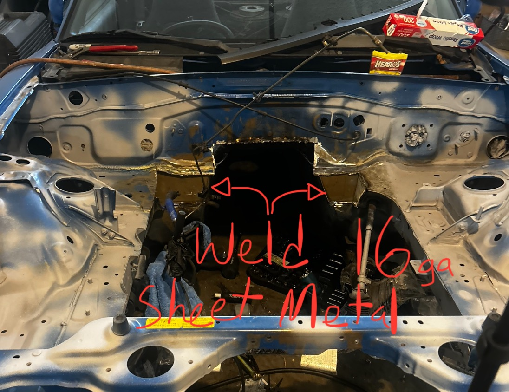
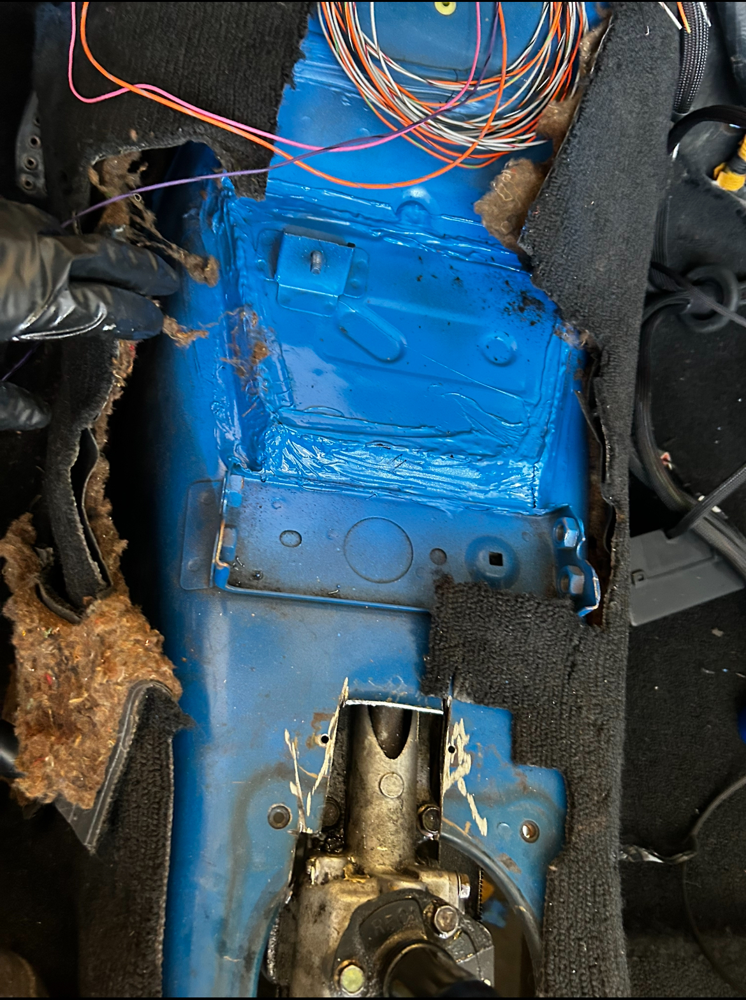
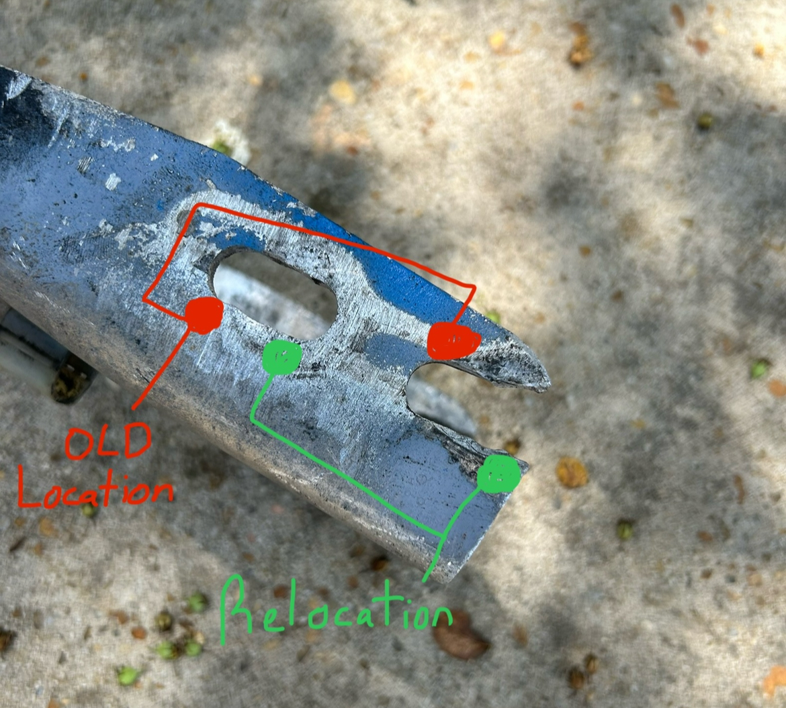

What worked for me
When I first did the swap I wanted to retain the miata ppf to not worry about transmission alignment and cut cost. I used;
- 5-speed from an NA 1991 RX-7
- Miata clutch slave cylinder
- FC RX7 Clutch Line
- NA FC flywheel and clutch
- NA Miata manual transmission (1.6/1.8) tailhousing with turret
- 1.8 Miata driveshaft
- NA8/NB 4.1 LSD
- NA RX-7 differential housing
- NB drive axles
- Slightly modified Miata PPF (1.6/1.8 still bolt up to 1.8 and NB differentials)
- FC S5 Non-turbo Starter
Be mindfull when ordering an RX7 transmission because the NA varient shares the intermediate housing with the 5 speed Miata transmission and Mazda B2000 pickup. The T2 transmission has a slightly diffrent bolt on pattern and you won't be able to use the NA Miata tailhousing unless you modify it. If you go with the RX7 internals instead of swapping with Miata guts you might have to remove a fat vibration absorber to fit the miata tail housing and replace the RX7 speedo gear with a Miata's if you plan on using the manual cable that goes to the dash since the RX7's gear teeth go in the opposite dirrection.Don't shave the inside of the Miata tailhousing in an attempt to retain the vibration absorber (you will end up shaving a hole in the housing to get it to fit).
For the transmission tunnel I reccomend cutting the top all the way back to the fire wall to make room and once the transmission is in you could use 16ga sheet metal to weld that top you cut off back on to close the tunnel again. Remember the less modifying you do the less you have to modify the dash when you go to install it later!
In order to retain the PPF just relocate the front side (transmission side) holes. The length shaved or relocated is determined by where your trans sits after dropping in the engine with trans bolted up into your subframe without being help up by your engine crane. Mine was about the diameter of the bolt Thatshad to get shifted forward
The rest of the drive train is cake work. Go with a NA 1.8 Miata (manual) driveshaft since it shares the same spline count and pattern as the FC RX7 gearbox. You could use a 1.6 Driveshaft if you are using the NA6 differential (Stupid weak and the diff assembly doesn't bolt to the RX7 diff housing). Proceeding with the 1.8 driveshaft the flange pattern will fit either NA8 or NB differentials. You could go with an NB Diff housing but the NA RX7 S4/S5 are twice the thickness (can hold more power/abuse). Make sure to get NA8/NB drive axles and seals. I'm not sponsored by but, I highly reccomend Redline 75W90 gear oil. MAKE SURE ITS GL5 NOT GL4!!!!! They have diffrent additives and the wrong one can toast your diff.
Here is the YouTube video on mating the Miata and RX7 trans: Click Here to Watch.
Here is the video to remove the dynamic damper on the S5 gearbox: Click Here to Watch.
Other common setups
After about 7 months of dailying the swap, tragically my diff seized up going over 140mph during a test pull. I miss diagnosed it as a blown transmission. Back when I first did the swap I wanted to replace the main bearing seal on the diff just because i didn't know the condition of the old one. I was in a rush and instead of using a torq wrench and a jig to keep the diff from spinning I took the big daddy impact and did a few too many ugga duggas. causing the internals to be slightly warpped and crushed. Over time with heat cycles it lead to it seizing up. I replaced it with another 4.1 LSD, oh well since I got scammed on the first diff which was actually an open diff. Foolishly since I did not properly trouble shoot I immediately assumed my trans was cooked and bought most of what I needed for a CD009 Swap. Here is a link that does a better job explaining how I made everything work: Click Here to Watch
Here are other common transmissions paired with 13Bs:
- RX8 6 speed manual (paired with NB 6 speed tailhousing to retain PPF)
- FB, FC, FC T2, and FD gearboxes if you make custom mount
- Toyota R154 with Rotary adapter kit
- T56 w/ adapter kit
- CD009 w/ Fischtech or collins adapter. Will Need short shifter kit (massive, heavy moddification, overkill)
- DCT w/ adapter
- NB 6 speed w/ RX8 bell housing and modified input shaft
- NA 5 speed w/ S4/S5 non-turbo RX7 bell housing and modified input shaft
- RX8 High Output Starter
I've worked with FischtechRacing for my build prior to the tarriff spikes and they have a knowledgable team with an amazing customer service. I've had the kit and used it since Jan. 2026 and still no issues. Autocross, street, drift, 10k RPM and it is still holding strong. It comes which an internal Hydraulic throw out bearing which is super helpful since the CD barely fits in the miata. Click Here I bought theirs since Collins was sold out of their rotary/CD kit for some time and didn't know when it would be restocked. Click Here
← Back to Rotary Miata Guide


